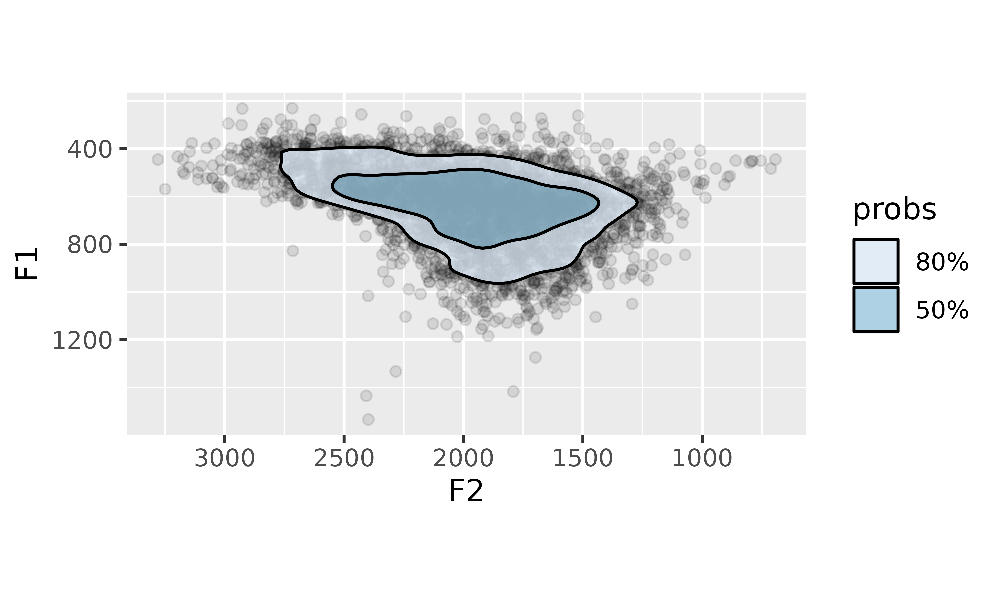
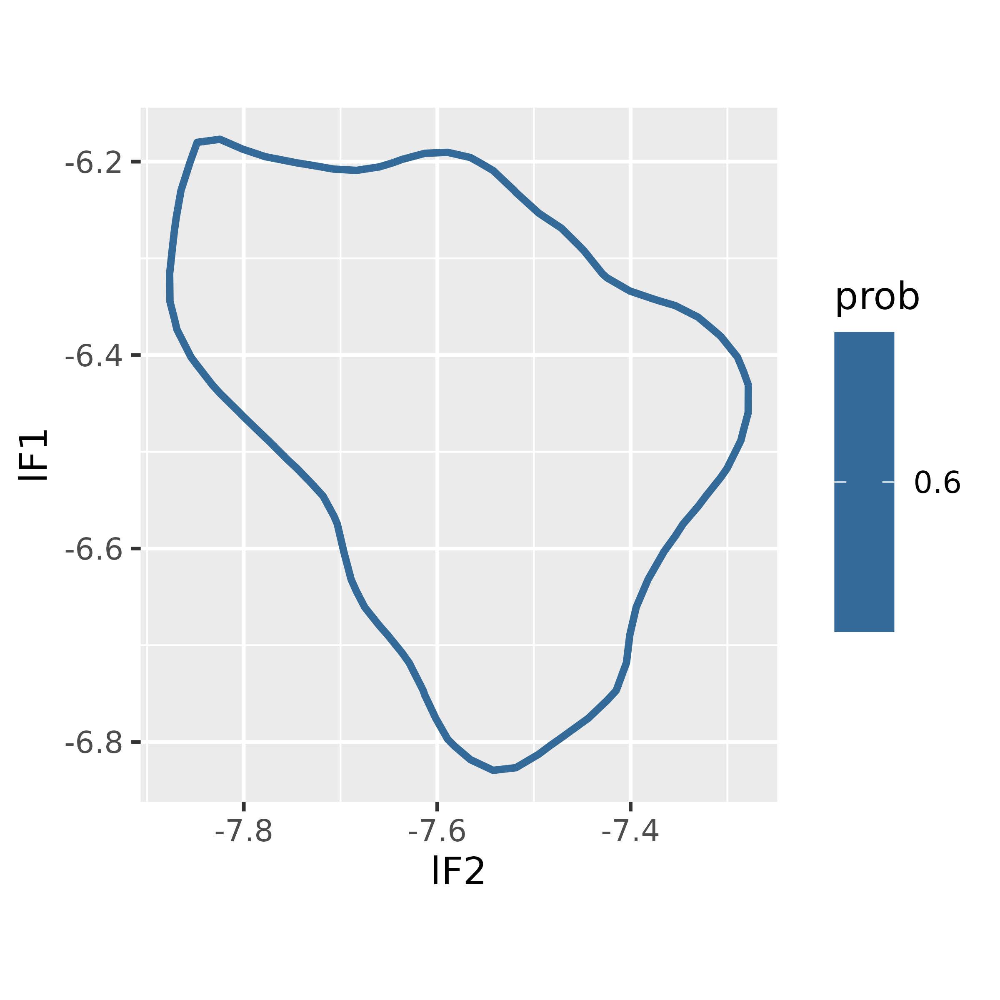
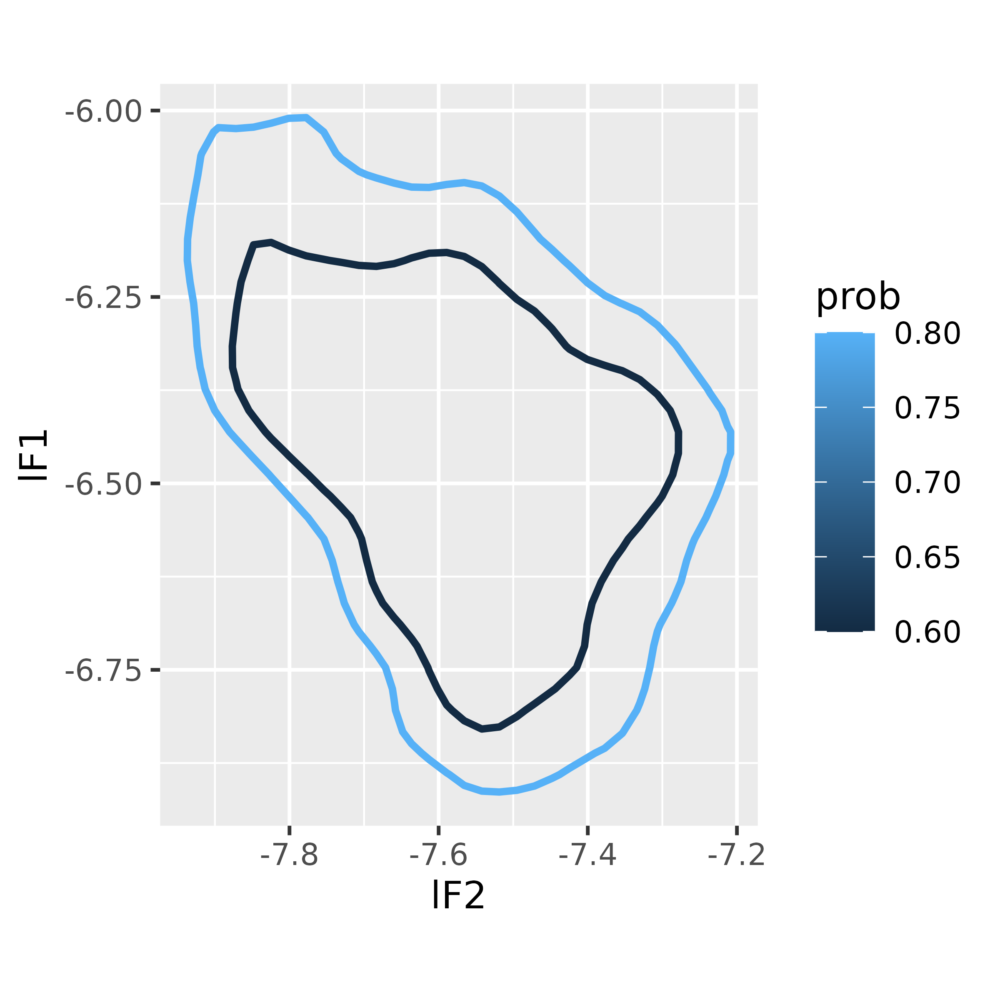
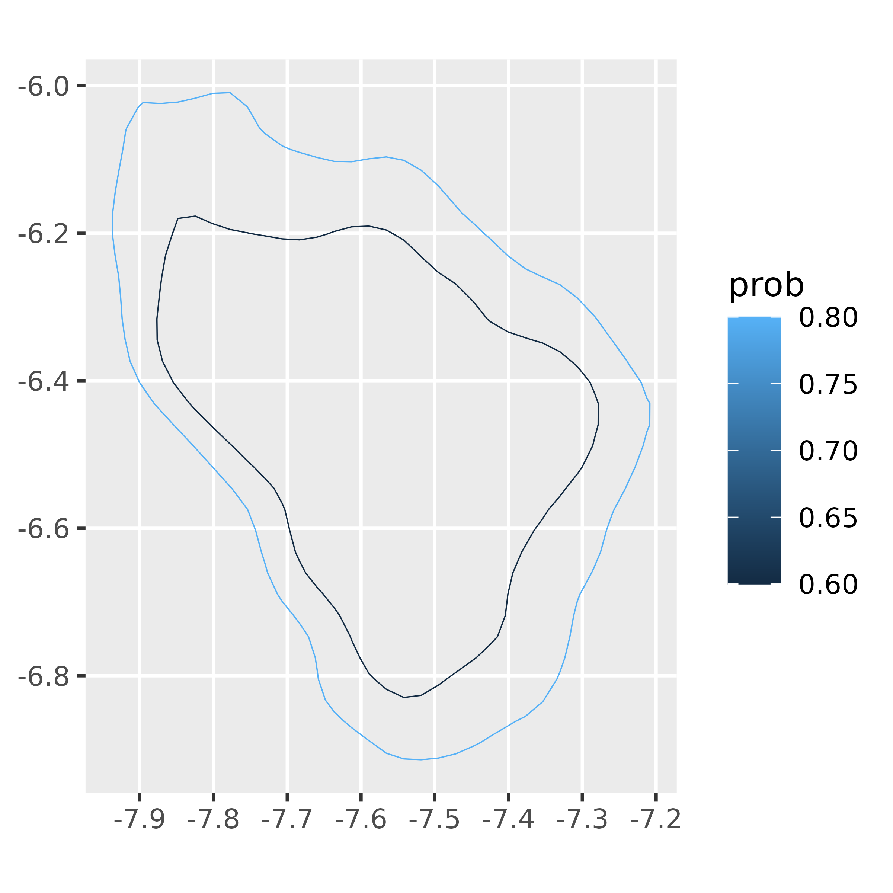

To get started with using densityarea, we’ll need to load some packages, and some data to work with. densityarea is meant to play nicely with tidyverse-style data processing, in addition to loading the package itself, we’ll aslo load dplyr and tidyr. We have the option of working with the density polygons in the form of simple features from sf, so we’ll load that as well. Finally, we’ll load ggplot2 and ggdensity for the sake of data visualization.
The dataset s01 is a data frame of vowel formant
measurements.
data(s01, package = "densityarea")
head(s01)
#> # A tibble: 6 × 10
#> name age sex word vowel plt_vclass ipa_vclass F1 F2 dur
#> <chr> <chr> <chr> <chr> <chr> <chr> <chr> <dbl> <dbl> <dbl>
#> 1 s01 y f OKAY EY eyF ejF 764. 2088. 0.2
#> 2 s01 y f UM AH uh ʌ 700. 1881. 0.19
#> 3 s01 y f I'M AY ay aj 889. 1934. 0.07
#> 4 s01 y f LIVED IH i ɪ 556. 1530. 0.05
#> 5 s01 y f IN IH i ɪ 612. 2323. 0.06
#> 6 s01 y f COLUMBUS AH @ ə 612. 1904. 0.07Initial look at the data
Let’s plot the original, raw data from s01, with the
Highest Density Regions overlaid (thanks to the ggdensity
package).
ggplot(data = s01,
aes(x = F2,
y = F1)
)+
geom_point(alpha = 0.1)+
stat_hdr(probs = c(0.8, 0.5),
aes(fill = after_stat(probs)),
color = "black",
alpha = 0.8)+
scale_y_reverse()+
scale_x_reverse()+
scale_fill_brewer(type = "seq")+
coord_fixed()
The function ggdensity::get_hdr() is perfect for quickly
adding interpretable densities to your plots. To work with these
densities as polygons, we can use
densityarea::density_polygons().
Getting density areas
Per the name of the package, we can get the area within each of these
density polygons with density_area().
As a first data processing step, let’s log transform and flip our
F1 and F2 values.
To get the area within the 80% density polygon for the entire data
set, we’ll pass s01 through a dplyr::reframe()
function.
s01 |>
group_by(name) |>
reframe(
density_area(lF2, lF1, probs = 0.8)
)
#> # A tibble: 1 × 4
#> name level_id prob area
#> <chr> <int> <dbl> <dbl>
#> 1 s01 1 0.8 0.406Or, if we wanted the areas associated with subsets of the data (say,
for each vowel) we’d just change our
dplyr::group_by() call.
s01 |>
group_by(name, vowel) |>
reframe(
density_area(lF2, lF1, probs = 0.8)
) ->
vowel_areasLet’s rearrange the order of rows to see the largest areas first.
vowel_areas |>
arrange(desc(area))
#> # A tibble: 15 × 5
#> name vowel level_id prob area
#> <chr> <chr> <int> <dbl> <dbl>
#> 1 s01 AO 1 0.8 0.488
#> 2 s01 AA 1 0.8 0.278
#> 3 s01 AH 1 0.8 0.274
#> 4 s01 AE 1 0.8 0.258
#> 5 s01 UW 1 0.8 0.229
#> 6 s01 EH 1 0.8 0.226
#> 7 s01 IY 1 0.8 0.206
#> 8 s01 UH 1 0.8 0.203
#> 9 s01 OW 1 0.8 0.197
#> 10 s01 IH 1 0.8 0.186
#> 11 s01 AY 1 0.8 0.171
#> 12 s01 AW 1 0.8 0.170
#> 13 s01 ER 1 0.8 0.145
#> 14 s01 EY 1 0.8 0.101
#> 15 s01 OY 1 0.8 0.0904Density Polygons
Polygon Data Frames
A single probability level
In the simplest approach, we can use density_polygons()
to return a data frame for just one probability level, 60%.
s01 |>
group_by(name) |>
reframe(
density_polygons(lF2, lF1, probs = 0.6)
)->
sixty_poly_df
head(sixty_poly_df)
#> # A tibble: 6 × 7
#> name level_id id prob lF2 lF1 order
#> <chr> <int> <int> <dbl> <dbl> <dbl> <int>
#> 1 s01 1 1 0.6 -7.57 -6.20 1
#> 2 s01 1 1 0.6 -7.59 -6.19 2
#> 3 s01 1 1 0.6 -7.61 -6.19 3
#> 4 s01 1 1 0.6 -7.64 -6.20 4
#> 5 s01 1 1 0.6 -7.65 -6.20 5
#> 6 s01 1 1 0.6 -7.66 -6.21 6Now, it’s possible for the HDR polygon to actually come in multiple pieces, but in this case, there’s just one polygon, so we can plot it.
ggplot(sixty_poly_df,
aes(lF2, lF1))+
geom_polygon(
aes(color = prob,
group = prob),
fill = NA,
linewidth = 1
)+
coord_fixed()
Multiple probability levels
To get polygons associated with multiple probability levels, we
simply pass a vector of values to probs.
s01 |>
group_by(name) |>
reframe(
density_polygons(lF2,
lF1,
probs = c(0.6, 0.8))
)->
multi_poly_df
head(multi_poly_df)
#> # A tibble: 6 × 7
#> name level_id id prob lF2 lF1 order
#> <chr> <int> <int> <dbl> <dbl> <dbl> <int>
#> 1 s01 2 1 0.8 -7.80 -6.01 1
#> 2 s01 2 1 0.8 -7.82 -6.02 2
#> 3 s01 2 1 0.8 -7.85 -6.02 3
#> 4 s01 2 1 0.8 -7.87 -6.02 4
#> 5 s01 2 1 0.8 -7.90 -6.02 5
#> 6 s01 2 1 0.8 -7.90 -6.03 6
ggplot(multi_poly_df,
aes(lF2, lF1))+
geom_polygon(
aes(color = prob,
group = prob),
fill = NA,
linewidth = 1
)+
coord_fixed()
Polygon Simple Features
We can also get density_polygons() to return the
polygons as simple features, as defined in the sf
package, by passing it the argument as_sf = TRUE.
s01 |>
group_by(name) |>
reframe(
density_polygons(lF2,
lF1,
probs = c(0.8, 0.6),
as_sf = TRUE)
) |>
st_sf()->
multi_poly_sfThe final function there, sf::st_sf(), wasn’t strictly
necessary, but makes life a little easier for plotting. Here’s what the
result looks like:
multi_poly_sf
#> Simple feature collection with 2 features and 3 fields
#> Geometry type: POLYGON
#> Dimension: XY
#> Bounding box: xmin: -7.93703 ymin: -6.913825 xmax: -7.208434 ymax: -6.009484
#> CRS: NA
#> # A tibble: 2 × 4
#> name level_id prob geometry
#> <chr> <int> <dbl> <POLYGON>
#> 1 s01 1 0.6 ((-7.565679 -6.195695, -7.589224 -6.190341, -7.61277 -6.…
#> 2 s01 2 0.8 ((-7.801131 -6.010429, -7.824676 -6.017003, -7.848222 -6…And here’s a plot.
